Lo que ves en la casa está hecho a mano.
Chaquira por chaquira, por artesanos wixárika de Nayarit. Puedes llevarte una pieza o pedir la tuya con nombre.
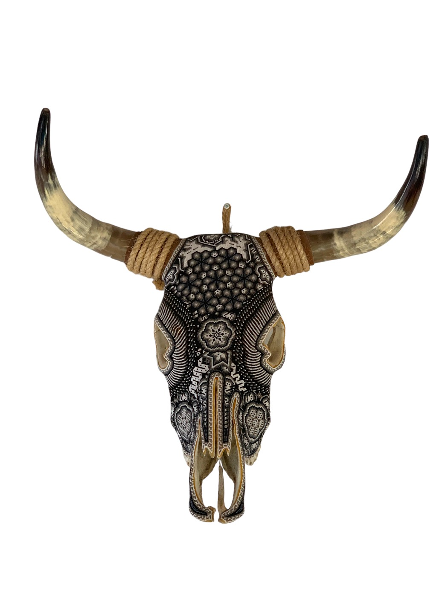
Cada pieza son miles de chaquiras de cristal, puestas una por una.
Antes de comprar arte wixárika, revisa tres cosas.
En la costa de Nayarit hay mucha artesanía de recuerdo. Esto es lo que distingue una pieza hecha a mano, la compres aquí o en otro lado.
Pulseras
Tejidas en chaquira con los colores y figuras de la tradición wixárika. Son el recuerdo que sí se usa: ligeras, de todos los días, y cada una distinta.
Cráneos de toro
Hueso natural con sus cuernos, cubierto de chaquira de punta a punta. Es la pieza que le da carácter a un muro. Si uno de la casa te gustó, pregúntanos por él.
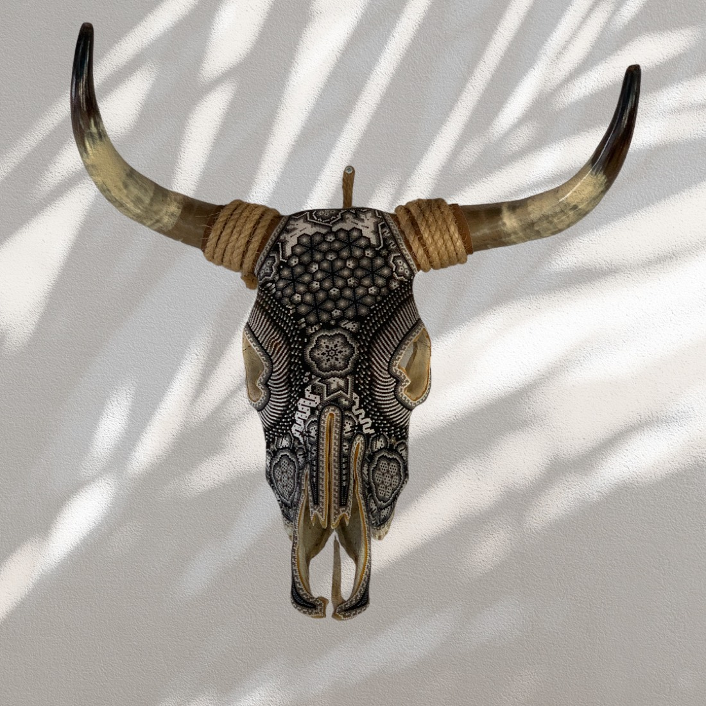
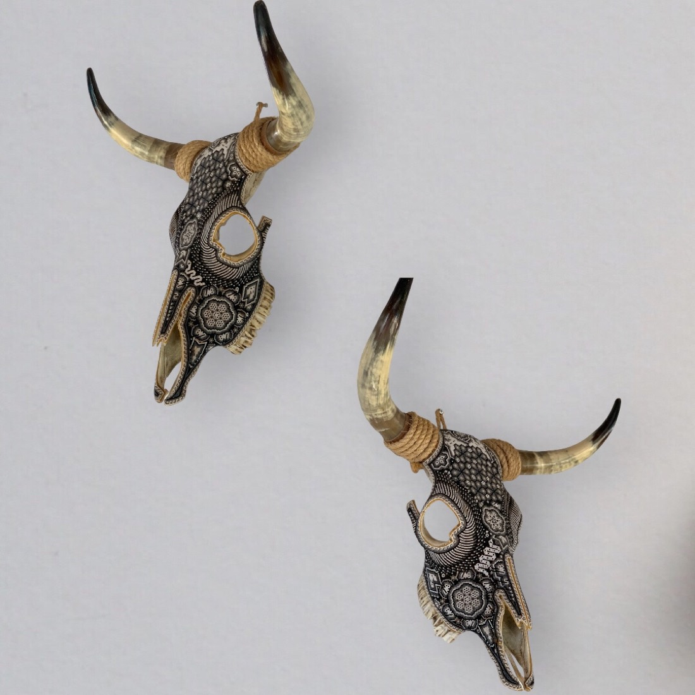
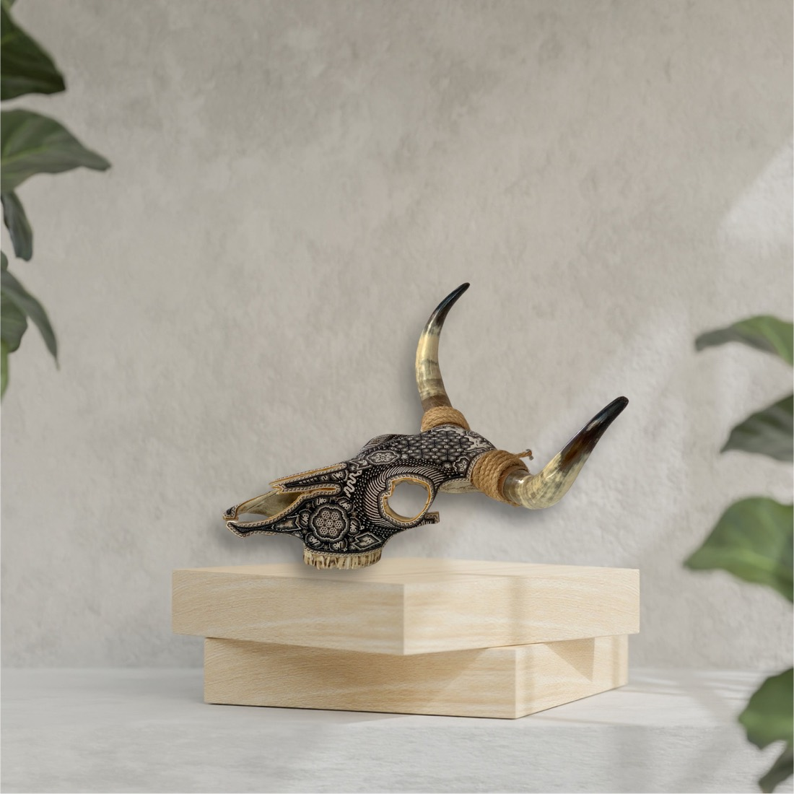
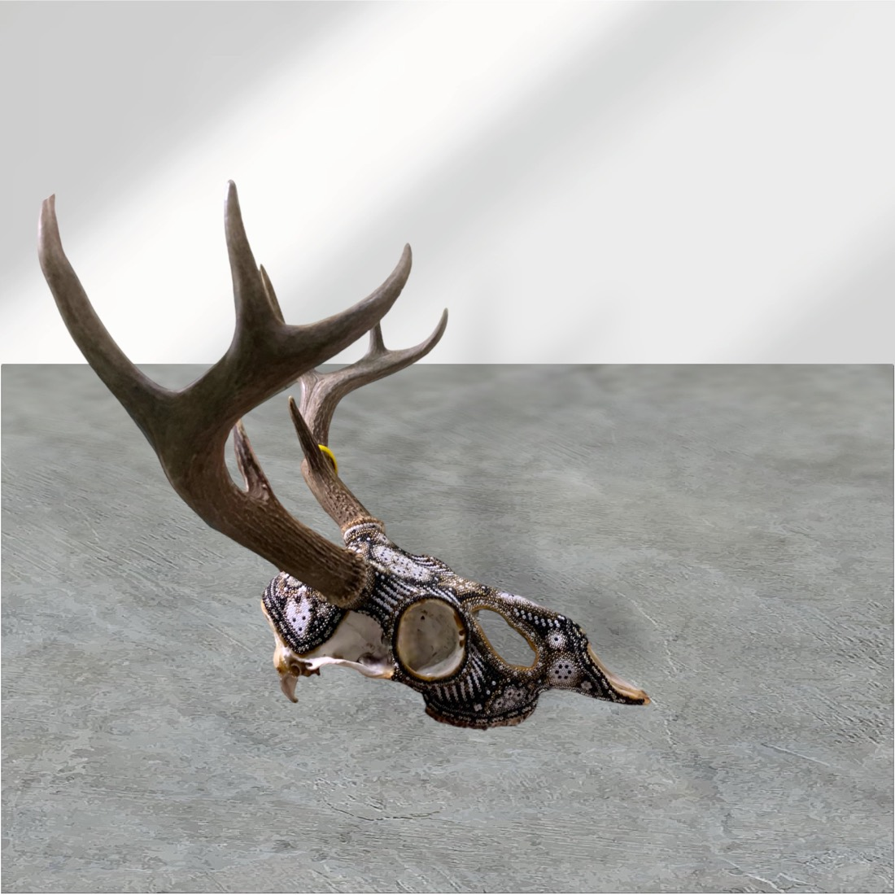
Piezas de la colección. Algunas ya encontraron casa: pregunta cuáles siguen disponibles.
Una botella con su nombre
Para un cumpleaños, una boda, un padrino o el regalo de fin de año de tu equipo. Se arma con tres decisiones y la hace el artesano para ti.
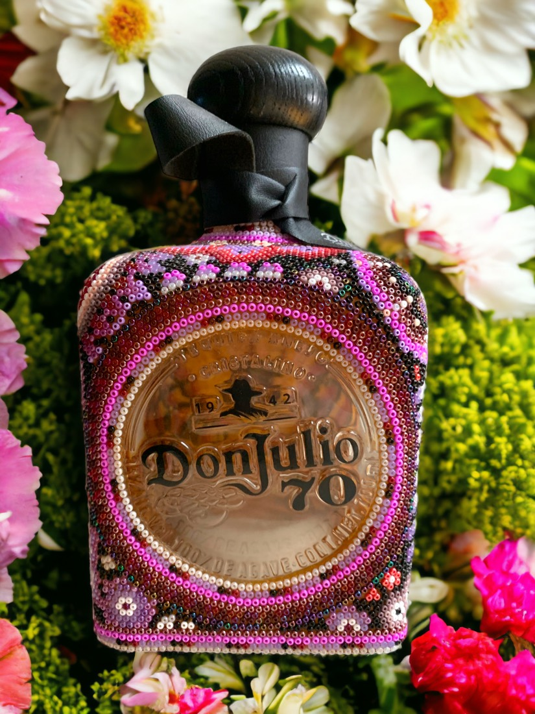
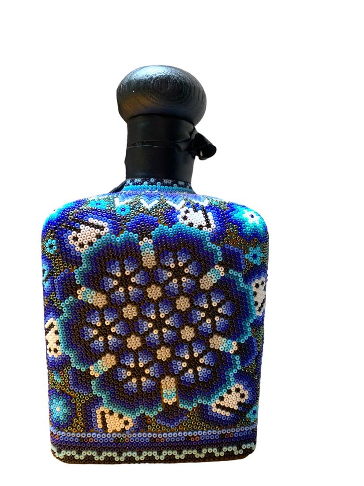
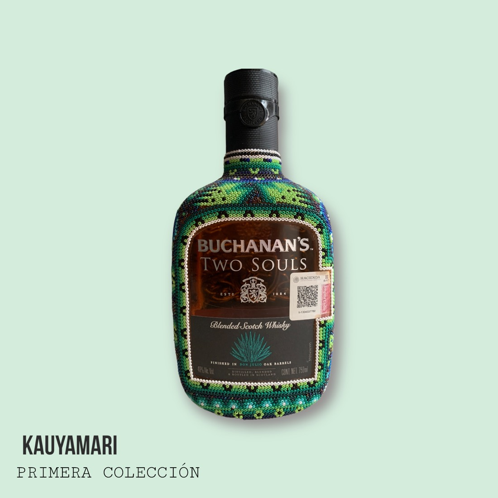
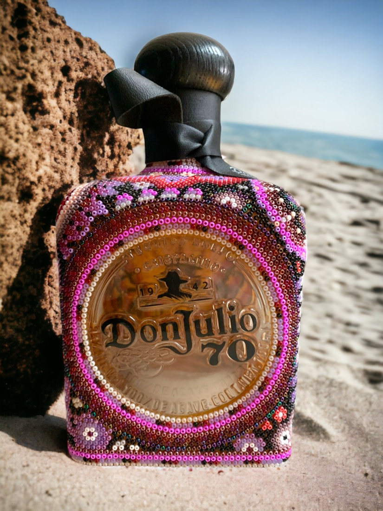
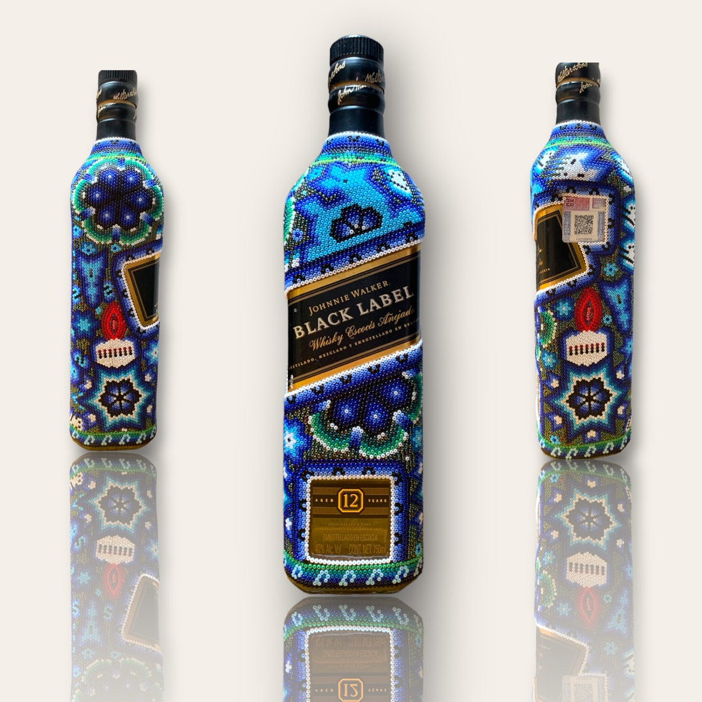
Tú pagas la decoración. La botella la compramos a precio de tienda, con ticket, o nos das la tuya. Se aparta con el 50 % y se entrega en Guadalajara o por paquetería.
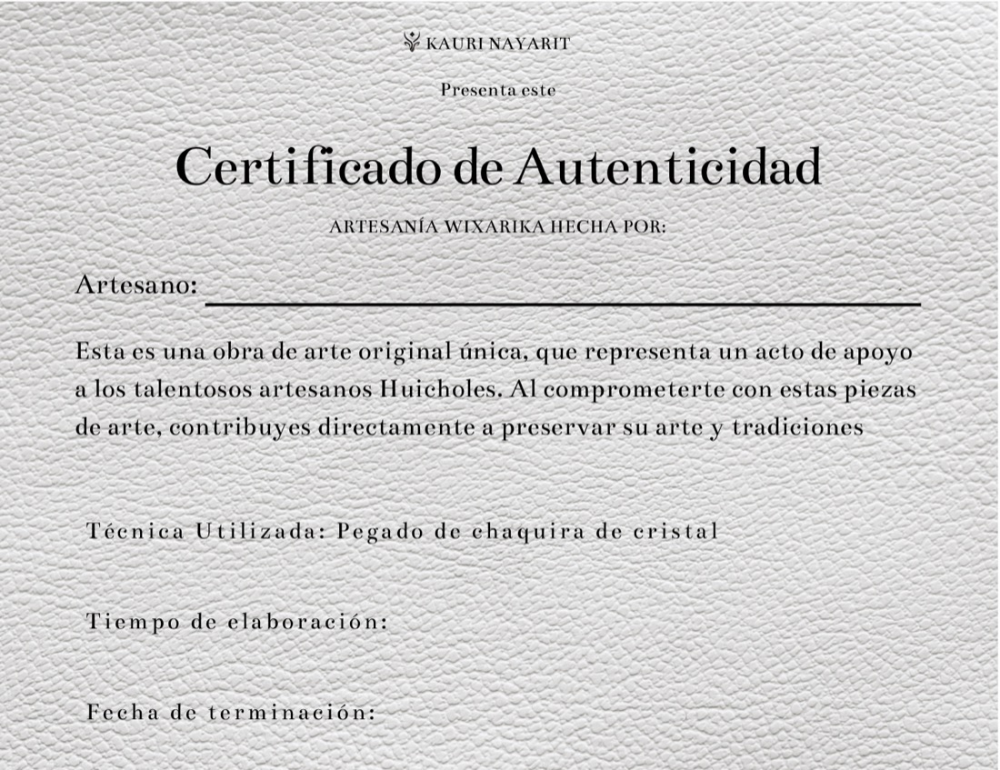
Cada pieza sale con su certificado.
Con el nombre del artesano, la técnica y el tiempo que le tomó. Comprar así es apoyar directamente a quien hace el trabajo, y es la diferencia entre un recuerdo y una pieza de arte.
Así de fácil.
Llévate un pedazo de Nayarit hecho a mano.
Y si todavía no conoces la casa donde viven estas piezas, empieza por ahí.